Identita domu
Nárožní dům Kulová × Školní (Schulgasse) s polygonálním arkýřem se štítem na západním rohu, vpravo od něj tři okenní osy ve třech podlažích, v přízemí obloukový vjezd u arkýře. Karta ze schodů (kolem roku 1968) ho jmenuje jako „protilehlý rohák čp. 260“.
Použité prameny: fotografie řady od schodů ze Školní (cp_258,259,260,1608_001), ručně kreslený plán střech bloku 260–263, GIS půdorys.
Přílohy v databázi (11)
Všechny přílohy struktury 260 v databázi Libuše, načtené 18. 10. 2026 a otevřené. Kliknutím otevřete větší náhled.

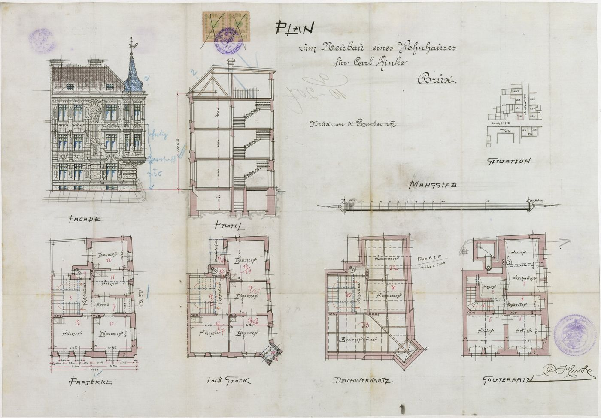
plán / výkres
SHA-256 b65eb69334fb…

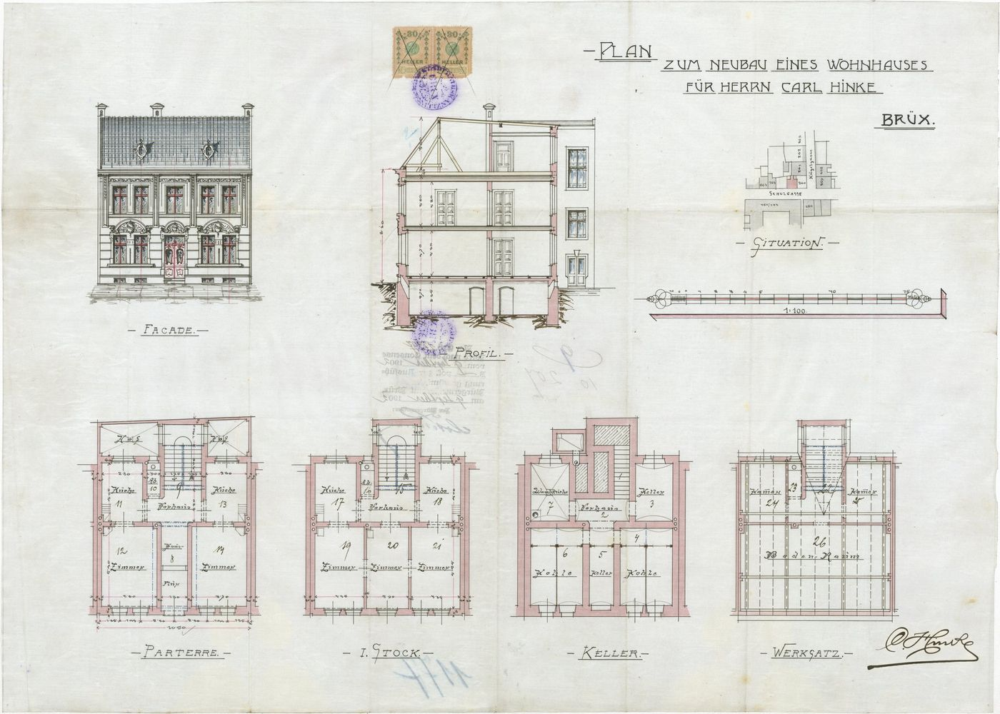
plán / výkres
SHA-256 252a80685f93…

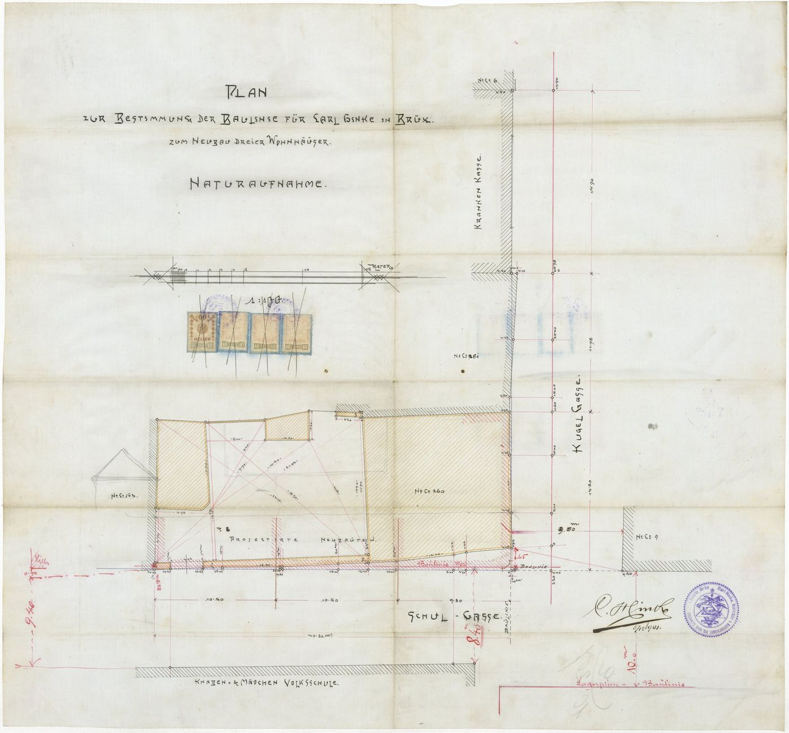
plán / výkres
SHA-256 27d1aded067f…

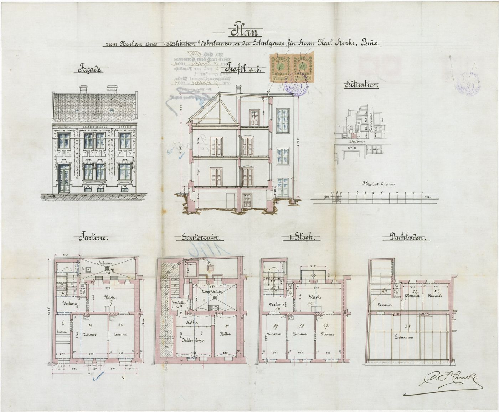
plán / výkres
SHA-256 7dd3d4c5aff2…

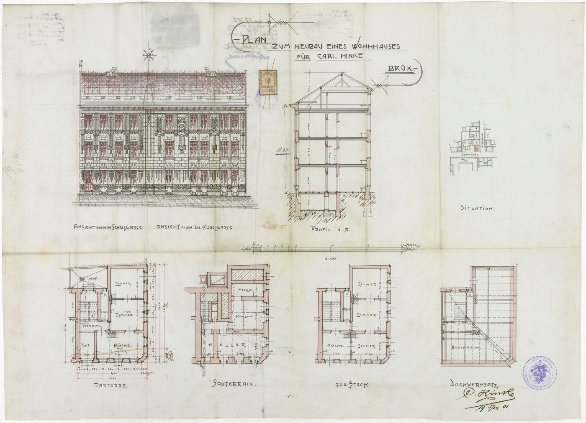
plán / výkres
SHA-256 a57a41e7e8ca…

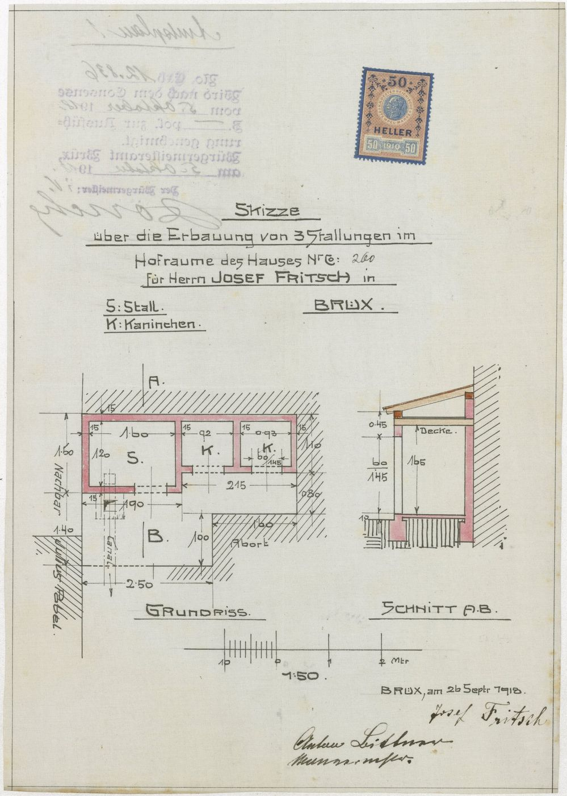
plán / výkres
SHA-256 23f9d58c3c00…

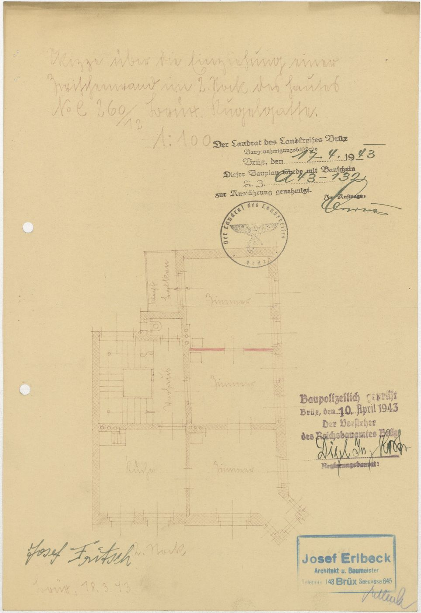
plán / výkres
SHA-256 b5921e6c83ce…

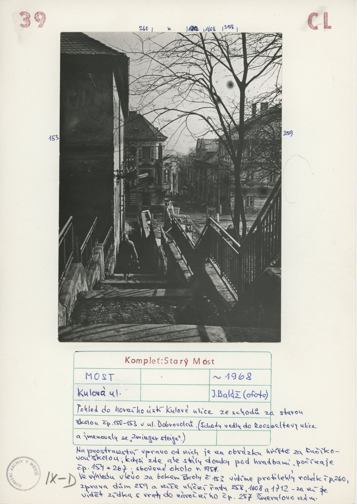
archivní karta
SHA-256 99035b68c24f…

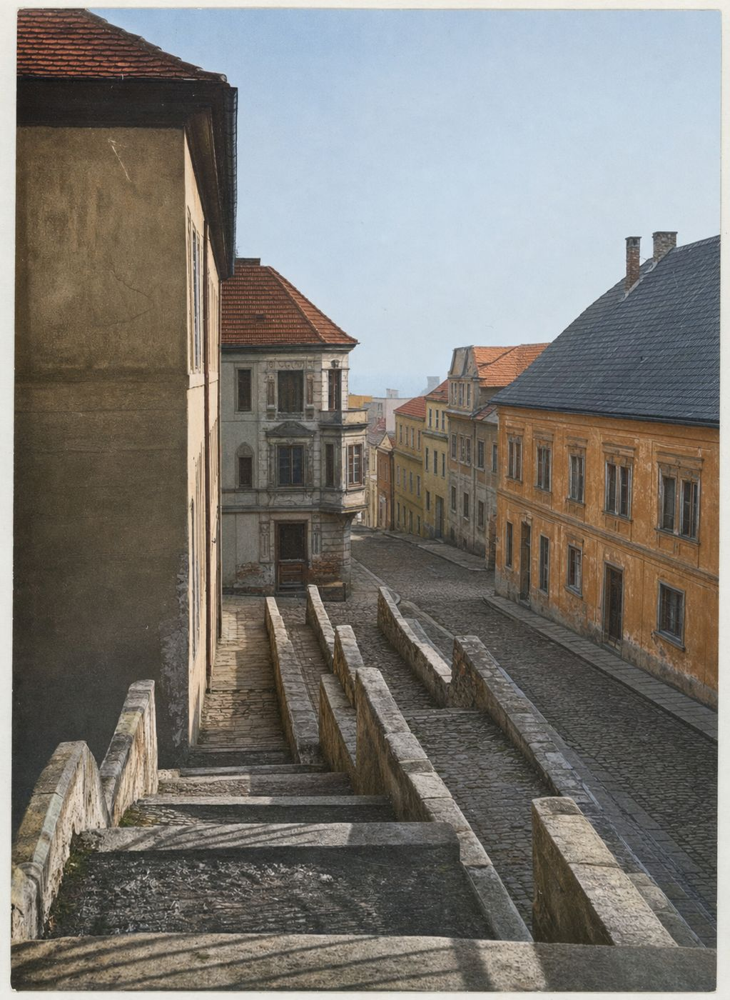
odvozenina (kolorovaná / FRONT)
SHA-256 f4cc505a9f70…

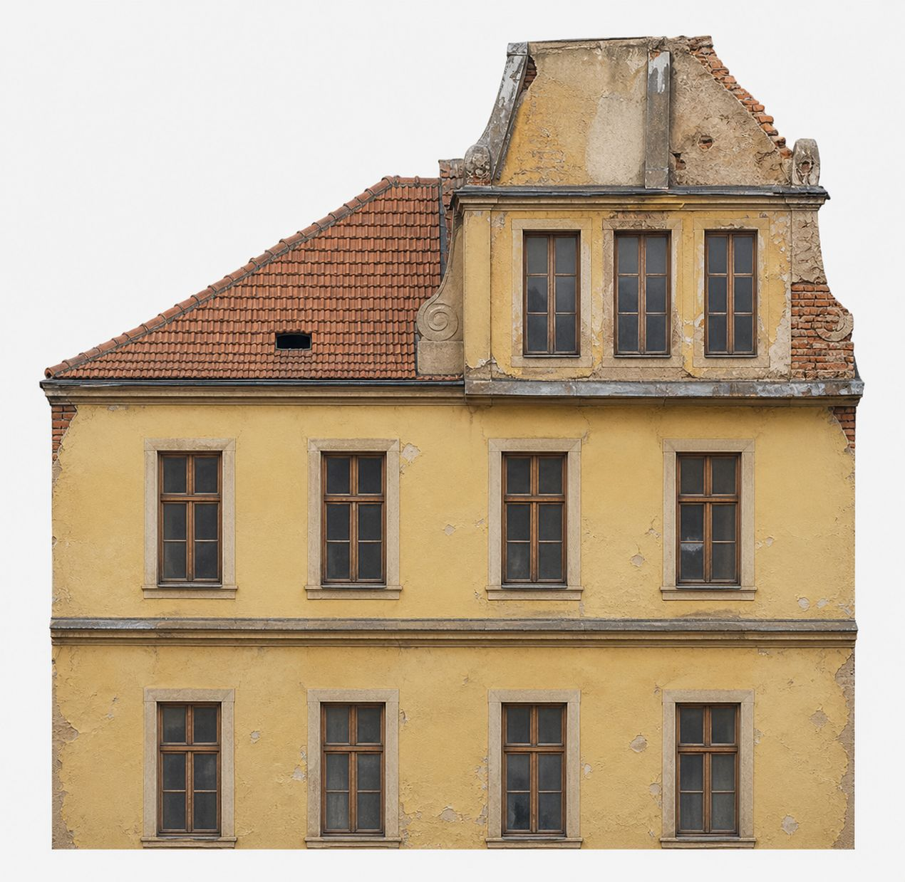
odvozenina (kolorovaná / FRONT)
SHA-256 9b9e1dab7995…

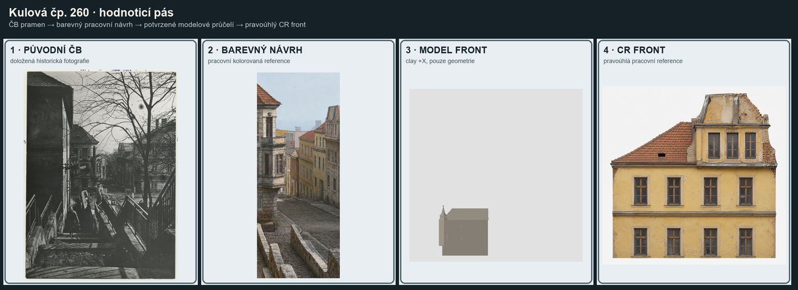
odvozenina (kolorovaná / FRONT)
SHA-256 fb52ab72e155…
Geometrie
| Revize geometrie | r5 |
|---|---|
| Poloha | GIS půdorys id 6 (ulice Kulová) |
| Šířka průčelí | 12,73 m |
| Výška okapu | 10,80 m (odhad) |
| Podlaží | 3 |
| Střecha podle pramenů | nárožní valba; hřeben uličního křídla podél Kulové, západního křídla podél Dobrovolců (plán střech bloku) |
| Otvory / vikýře | 9 / 0 |
| Polygonů | 167 |
Kontrolní pohledy
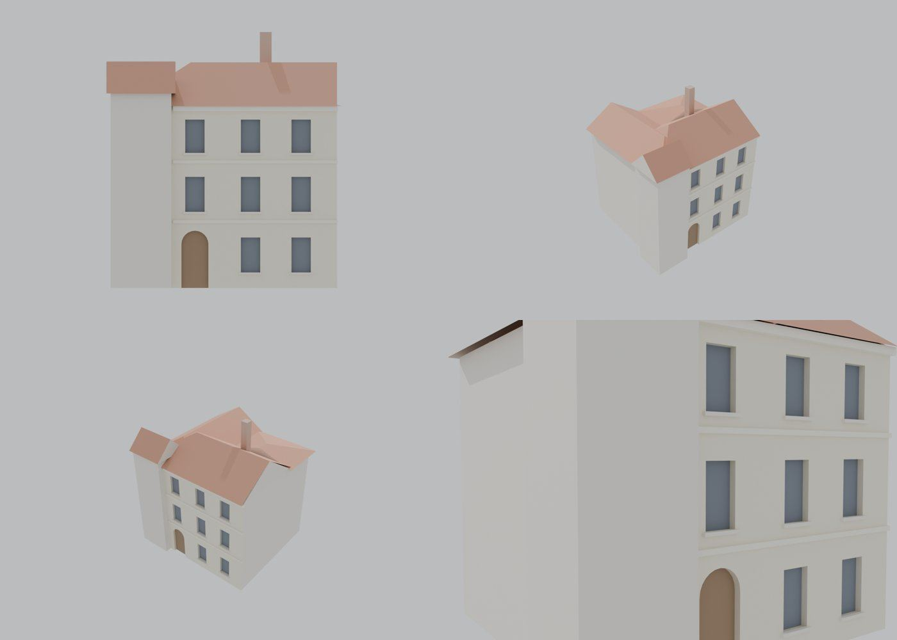
Textury
zatím bez textur
Až Codex dodá texturovaný model, objeví se v prohlížeči nahoře volba Textury (Codex).
Hypotézy
Vše níže je model_hypothesis, provisional, locked: false.
- výšky podlaží a okapu jsou odhad z fotografie (žádný řez)
- nárožní arkýř zjednodušen na hranol se střešní hmotou; na fotografii je polygonální se štítem
- dlouhá fasáda do Schulgasse bez otvorů (nemodelováno)
- polohy os odečteny ze šikmého záběru, ne z rektifikované fotografie
Soubory
- Geometrie čp. 260, GLB
- Pracovní model: F:\MOST\output\kulova_5houses_claude_G_2026-10-16\houses\cp260\r5\cp_260_G_r5.blend
- Plán modelu: F:\MOST\output\kulova_5houses_claude_G_2026-10-16\houses\cp260\geometry_plan.json